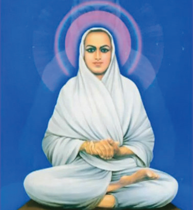
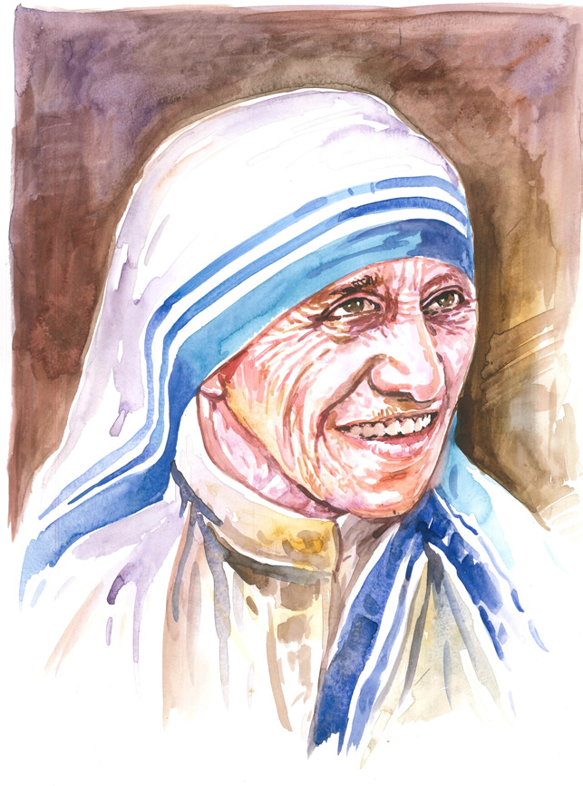
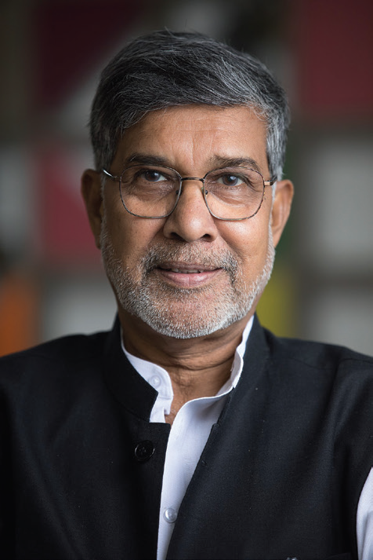

நுழையும்முன்
இல்லாதவர்க்குக் கொடுத்து மகிழ்வதே ஈகை. பசி என்று வந்தவர்க்கு வயிறார உணவிட வேண்டும். தீமை செய்தவர்க்கும் நன்மையே செய்ய வேண்டும். ஆதரவு இல்லாதவர்களை அன்புடன் அரவணைக்க வேண்டும். பிறர் துன்பத்தைத் தமது துன்பமாக நினைத்து வருந்தும் பண்பினைக் கொள்ள வேண்டும். இப்பண்புகளைக் கொண்டு வாழ்வோர் உயர்வு அடைவர். அப்படி வாழ்ந்தோரின் வாழ்வில் நடந்த சில நிகழ்வுகளைக் காண்போம் வாருங்கள்.
உலகில் எந்த ஆறும் தனது தாகத்திற்காக ஓடுவதில்லை. எந்தநிலமும் தன் பசிக்காக விளைவதில்லை. எந்த மரமும் தனக்காகக் கனிகளை உருவாக்குவதில்லை. இவற்றைப் போல மனிதனும் தனக்கென வாழாமல், பிறர்க்கென வாழ வேண்டும். அவ்வாறு வாழ்வதற்குக் அருள், பொறுமை, பரிவு, நன்றி உணர்வு, இன்சொல் பேசுதல் போன்றவை தேவை. எல்லா உயிர்களிடமும் அன்பு செலுத்துதல் வேண்டும். அதுவே மனிதநேயம் ஆகும். மனிதநேயத்துடன் வாழ்பவர்களால் தான் இவ்வுலகம் இயங்கிக் கொண்டிருக்கிறது. இந்தஉண்மையை,
தமக்கென முயலா நோன்றாள் - பிறர்க்கென
முயலுநர் உண்மையானே (புறம் - 182)
என்னும் புறநானூற்று அடிகள் உணர்த்துகின்றன.
வள்ளலார்

வள்ளலார் வாழ்வில் நடந்ததாக ஒரு நிகழ்வைப் பலரும் கூறுவதுண்டு. வள்ளலார் தம் இளம் வயதில் ஒருநாள் நடந்து வந்து கொண்டிருந்தார். நீண்ட தூரம் நடந்ததால் களைப்பு ஏற்பட்டது. எனவே ஓய்வெடுக்க விரும்பினார். வழியில் சத்திரம் ஒன்று இருந்தது. அதன் திண்ணையில் படுத்து உறங்கினார். அப்போது ஒருவன் அங்கு வந்தான். படுத்திருந்த வள்ளலாரின் காதில் கடுக்கன் இருப்பதைக் கண்டான். அதனைத் தனதாக்கிக் கொள்ள முடிவெடுத்தான். தங்கக்கடுக்கனை மெதுவாகக் கழற்றினான். அவனது செயலை அறிந்தும் வள்ளலார் கண் மூடியபடியே படுத்திருந்தார். ஒரு கடுக்கனைக் கழற்றியவுடன், மறுகாதில் உள்ள கடுக்கனை அவன் கழற்றுவதற்கு ஏதுவாகத் திரும்பிப்படுத்தார். அவன் அதையும் கழற்றிக் கொண்டு, அந்த இடத்தை விட்டு அகன்று செல்ல முற்பட்டான். அப்போது வள்ளலார் மென்மையான குரலில், ’‘அப்பா, இவை இரண்டும் தங்கக்கடுக்கன்கள். குறைந்த விலைக்கு விற்றுவிடாதே! மேலும், ஒரு கடுக்கனுடன் சென்றால் உன்னைத் திருடன் என எளிதாகக் கண்டுபிடித்து விடுவார்கள். எனவேதான் இரண்டு கடுக்கன்களையும் நீ எடுத்துக் கொள்வதற்கு வாய்ப்பாகத் திரும்பிப்படுத்தேன்“ என்றார். வள்ளலார் கூறியதைக் கேட்ட அவன் வெட்கித் தலை குனிந்தான். இவ்வாறு தம்பொருளைக் கவர்ந்தவரிடம் கூட அன்பு காட்டியவர் வள்ளலார்.
வள்ளலார் மக்களின் பசிப்பிணியைக் கண்டு உள்ளம் வாடினார். அதனை நீக்க விரும்பினார். தம் பெருமுயற்சியால் வடலூரில் சத்திய தருமச்சாலையைத் தொடங்கி எல்லாருக்கும் உணவளித்தார். பசித்தோருக்கு உணவு வழங்கும் வள்ளலாரின் மனிதநேயச் செயல் வடலூரில் இன்றும் தொடர்ந்து நடைபெற்று வருகிறது.
தெரிந்து தெளிவோம்
வாடிய பயிரைக் கண்டபோதெல்லாம் வாடினேன்
- வள்ளலார்
அன்னைதெரசா
ஒரு நாள் அன்னைதெரசா சாலையின் ஓரமாக நடந்து சென்றார். அப்போது வழியில் மூதாட்டி ஒருவர் சாலையின் ஓரம் படுத்திருந்தார். அவர் முகத்தைத் துணியால் மூடி இருந்தார். ஒரு கையால் பூனைக் குட்டியை அணைத்துக் கொண்டு இருந்தார். அன்னை தெரசா அவரின் அருகில் சென்று உற்று நோக்கினார். தொழுநோயின் கடுமையால் உண்டான வேதனை மூதாட்டியின் முகத்தில் தெரிந்தது. கைகளில் விரல்கள் இல்லை. அன்னைதெரசா மனம் கலங்கினார். மூதாட்டியின் அருகில் சென்று அவரைத் தொட்டுத் தூக்கினார். "சாலைஓரத்தில் படுத்து இருப்பது ஏன்?" எனக் கேட்டார்.

என்னைத் தொடாதீர்கள் என் நோய் உங்களுக்கும் தொற்றிக் கொள்ளும். என் உறவினர்களே என்னை வெறுத்து விலக்கி விட்டனர். என்னுடன் பேசுவதில்லை. என்னைக் கண்டாலே விலகி ஓடுகின்றனர். இந்தப் பூனை மட்டுமே என்னுடன் இருக்கிறது” என அழுதார் மூதாட்டி.
இதைக் கேட்ட அன்னைதெரசா கண்ணீர்விட்டார். இவரைப் போல ஆயிரக்கணக்கான நோயாளிகள் உதவி செய்யயாருமின்றி வாடுவதைக் கண்டார். அக்காலத்தில் தொழுநோய் கடுமையான தொற்றுநோயாகக் கருதப்பட்டது. கருணை உள்ளம் கொண்ட அன்னைதெரசா அவர்களுக்குத் தொண்டு செய்ய முடிவெடுத்தார். தமது இறுதிக் காலம் வரை பிறருக்காகவே வாழ்ந்தார்.
மக்களுக்குச் செய்யும் பணியே இறைவனுக்குச் செய்யும் பணி என்று வாழ்ந்தார். அதனால் அமைதிக்கான நோபல் பரிசு அவரைத் தேடி வந்தது.
தெரிந்து தெளிவோம்
வாழ்க்கை என்பது
நீ சாகும் வரை அல்ல
மற்றவர் மனதில்
நீ வாழும் வரை. அன்னை தெரசா
கைலாஷ் சத்யார்த்தி
அன்னை தெரசாவிற்கு அடுத்து அமைதிக்கான நோபல் பரிசு பெற்ற இந்தியர் கைலாஷ் சத்யார்த்தி. இவர் சிறு வயதில் தினமும் பள்ளிக்கூடம் செல்லும்போது சாலையோரத்தில் ஒரு சிறுவனைக் கண்டார். அவன் தன் தந்தையுடன் அமர்ந்து வேலை செய்து கொண்டு இருப்பான். அவன் தன் தந்தையுடன் அமர்ந்து வேலைசெய்து கொண்டு இருப்பான். ஏன் அந்தச் சிறுவன் தன்னைப்போல பள்ளிக்கு வரவில்லை என்ற கேள்வி அவர் உள்ளத்தில் உறுத்திக் கொண்டே இருந்தது. தம் ஆசிரியரிடமும் பெற்றோரிடமும் இக்கேள்வியைக் கேட்டார். "பணம் இல்லாததால் அச்சிறுவன் பள்ளிக்கு வரவில்லை. வீட்டின் உணவுத் தேவையை நிறைவு செய்யப் பணம் வேண்டும். எனவே அவன் பணம் ஈட்ட வேலை பார்க்கிறான்" என்ற பதில் கிடைத்தது. அந்தப் பதில் அவருக்கு மிகுந்த மன வருத்தத்தைக் கொடுத்தது.

அவருடைய மனித நேயம் பிற்காலத்தில் அவரைப் பள்ளி செல்லாத குழந்தைகள் மேல் பரிவு கொள்ளவைத்தது. அதற்காக அவர் குழந்தைகளைப் பாதுகாப்போம் என்னும் இயக்கத்தைத் தொடங்கினார். அந்த இயக்கத்தின் மூலம் குழந்தைத் தொழிலாளர் முறையை ஒழிக்கப் பாடுபட்டு வருகிறார். கடந்த முப்பது ஆண்டுகளில் எண்பத்து ஆறாயிரம் குழந்தைத் தொழிலாளர்களை மீட்டுள்ளார். உலகக் குழந்தைகள் கல்வி உரிமைக்காக 103 நாடுகளில் 80,000 கிலோ மீட்டர் தூரம் நடைப்பயணம் சென்றுள்ளார். குழந்தைகளின் கல்வி மற்றும் உரிமைக்காக நாடு கடந்து பரப்புரை ஆற்றி வருகிறார்.
தெரிந்து தெளிவோம்
குழந்தைகளைத் தொழிலாளர்களாக மாற்றுவது மனிதத் தன்மைக்கு எதிரான குற்றம்.
உலகத்தைக் குழந்தைகளின் கண்கொண்டு பாருங்கள். உலகம் அழகானது.
- கைலாஷ் சத்யார்த்தி
இவரைப்போல் மனிதநேயம் மிக்க பலர் உள்ளனர். அமைப்பாக உதவுவது மட்டுமன்று; சூழலுக்கேற்ப மனிதநேயம் கொள்ளும் இவர்களைப் போல நாமும் மனிதநேயத்துடன் நடந்து கொள்ளவேண்டும். நமக்குள் இருக்கும் மனிதநேயத்தைமலரச் செய்யவேண்டும்.
எங்கே அன்பு இருக்கிறதோ அங்கேமனித நேயமும் இருக்கும்.
கற்பவை கற்றபின்
1 நாளிதழ்களில் வந்துள்ள மனிதநேயம் பற்றிய செய்திகளைச் சேகரித்துகு கூறுக.
2 எவரேனும் ஒருவருக்கு நீங்கள் உதவி செய்த அனுபவத்தைக் கூறுக.
3 ஒற்றுமையாக வாழும் பண்பே சிறந்தது என்பது பற்றி நண்பர்களுடன் கலந்துரையாடுக.
1 எல்லா உயிர்களிடத்தும் அன்பு செலுத்துதல் டேஷ்
அ) மனித வாழ்க்கை
ஆ) மனித உரிமை
இ) மனித நேயம்
ஈ) மனித உடைமை
2 தம் பொருளைக் கவர்ந்தவரிடமும் டேஷ் காட்டியவர் வள்ளலார்.
அ) கோபம்
ஆ) வெறுப்பு
இ) கவலை
ஈ) அன்பு
3 அன்னை தெரசாவிற்கு டேஷ் க்கான நோபல் பரிசு கிடைத்தது
அ) பொருளாதாரம்
ஆ) இயற்பியல்
இ) மருத்துவம்
ஈ) அமைதி
4 கைலாஷ் சத்யார்த்தி தொடங்கிய இயக்கம் டேஷ்
அ) குழந்தைகளைப் பாதுகாப்போம்
ஆ) குழந்தைகளை நேசிப்போம்
இ) குழந்தைகளை வளர்ப்போம்
ஈ) குழந்தைகள் உதவி மையம்
1 வள்ளலார் – நோயாளிகளிடம் அன்பு காட்டியவர்
2 கைலாஷ் சத்யார்த்தி – பசிப்பிணி போக்கியவர்
3 அன்னை தெரசா – குழந்தைகள் உரிமைக்குப் பாடுபட்டவர்
1 மனிதநேயம்
2 உரிமை
3 அமைதி
4 அன்புசெய்தல்
1 யாரால் உலகம் இயங்கிக் கொண்டு இருக்கிறது?
2 வள்ளலார் பசிப்பிணியை நீக்க என்ன செய்தார்?
3 அன்னை தெரசா கண்ணீர் விடக் காரணம் யாது?
கைலாஷ் சத்யார்த்தி நோபல் பரிசு பெறத் தூண்டுகோலாக அமைந்த இளமைக்கால நிகழ்வு யாது?
அன்னை தெரசாவின் மனிதநேயம் பற்றிய வேறு ஒரு நிகழ்வினை அறிந்து எழுதுக.